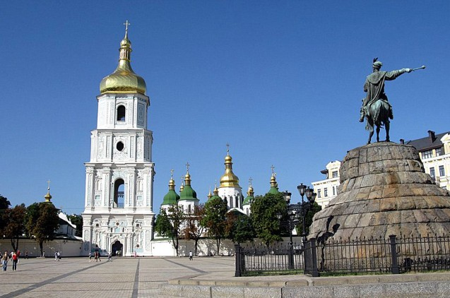

Софія Київська
Софія Київська пережила та побачила на своєму віку стільки, що про це можна говорити нескінченно. Софія – це справжня культурна скарбниця: тут і архітектура, і скульптура, і малярство, і ювелірне мистецтво зібрані в один потужний акорд…
Найвеличнішою спорудою Національного заповідника „Софія Київська” є Софійський собор – всесвітньо відома пам’ятка архітектури і монументального живопису ХІ ст. У 1990 р. собор разом ансамблем монастирських споруд на його подвір’ї занесено до Списку всесвітньої спадщини ЮНЕСКО.
Заснування собору згадується в літописах як під 1017, так і під 1037 роками. Будівничим Святої Софії літописці називають великого Київського князя Ярослава Мудрого. Джерела свідчать, що в цій справі Ярослав завершив починання свого батька Володимира.
Давньоруські написи-графіті на фресках храму, що містять дати 1022, 1033 та 1036 рр., підтверджують заснування Софії Володимиром – хрестителем Русі. Присвячений Премудрості Божій, собор, за задумом творців, мав утверджувати на Русі християнство.
Упродовж сторіч Софія Київська була головною святинею Русі-України. Собор, як головний храм держави, відігравав роль духовного, політичного та культурного центру. Під склепіннями Святої Софії відбувалися урочисті „посадження” на великокняжий престол, церковні собори, прийоми послів, укладання політичних угод. При соборі велося літописання і була створена перша відома на Русі бібліотека.
Тут відбувалися і найвидатніші події у становленні української державності. На початку ХХ ст. на Софійському майдані проголошувались Універсали Центральної Ради Української держави 1917–1918 рр. Тут у 1991 р. Всеукраїнським народним віче підтримано Акт про державну незалежність України.

Софія – свідок і безпосередній учасник життя Києва протягом багатьох сторіч. Вона пережила навалу монголо-татарської орди у грізному 1240 р., періоди занепаду і відродження міста у XIV–XVI ст., бачила польсько-литовських феодалів у XVII ст.
Софія зберігає найбільший у світі ансамбль унікальних мозаїк і фресок першої чверті ХІ ст. – 260 м кв. мозаїк та 3000 м кв. фресок. Особливу цінність становлять мозаїки, які прикрашають головні частини храму – центральну баню і головний вівтар. Тут зображені основні персонажі християнського віровчення. Вони розташовані у суворому порядку, згідно з „небесною ієрархією”. Усі мозаїки виконані на сяючому золотому тлі. Їм притаманні вишуканий малюнок, багатство барв, яскравість і насиченість тонів. Усього палітра мозаїк налічує 177 відтінків кольорів. На склепінні головного вівтаря – славетний мозаїчний образ Богоматері Оранти, руки якої здійняті в молитві. Віками її шанували як Нерушиму Стіну Києва – Єрусалиму землі Руської. Вона є символом вічності Києва – духовного осердя й столиці Русі-України.
У соборі зберігся великий цикл знаменитих світських фресок. На стінах центральної нави зображено парадний вихід сім’ї Володимира Великого – цей княжий груповий портрет символізує хрещення Русі. У сходових вежах, що ведуть на княжі хори, розміщено тріумфальний палацовий цикл фресок. Він розповідає про укладення династичного шлюбу князя Володимира і візантійської принцеси Анни наприкінці Х ст., який поклав початок хрещенню Русі.
Цінною реліквією собору є мармуровий саркофаг Ярослава Мудрого, в якому покояться останки князя. Саркофаг вагою 6 т оздоблений пишним різьбленням.
Собор зберігає художній спадок кількох поколінь. У XVII–XVIII ст. У приміщення давніх відкритих галерей вбудовані каплиця митрополита Петра Могили та капела гетьмана Івана Мазепи. Чудовими творами у стилі бароко є мідні позолочені двері початку XVIII ст. та різьблений позолочений іконостас (1747 р.).